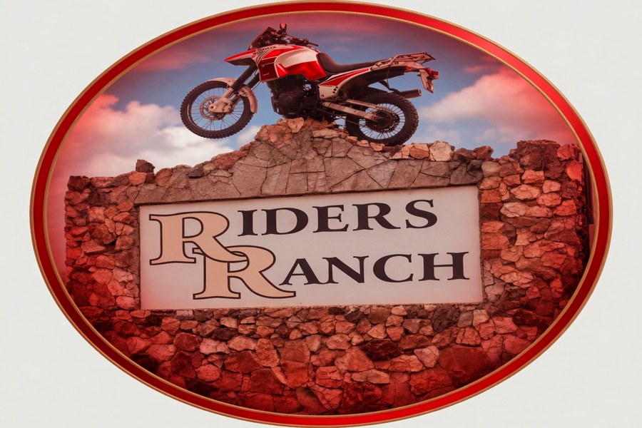

Find Your Pace
Every Sunday morning, three groups set off. One finish line: the lunch table.
Fast Departs
Medium Departs
Easy Departs
Lunch Together
Leaving at 9:15 AM sharp, covering an average of 50 kilometres through the roads around Sidvokodvo and into the Middleveld. No hanging around — if you can hold pace, every kilometre is worth it.
These are the riders who chase club records and set the times everyone else wants to beat. Several fast group members compete in the Swazi Rally and external events.
Experienced cyclists with good fitness who can maintain high cadence over distance. Competitive spirit is a definite plus.

The perfect balance between effort and enjoyment. Departing at 9:30 AM and covering around 35 kilometres — challenging without leaving you spent. Conversation is possible. Scenery gets noticed.
A real social group — you work together, share the road, and arrive at lunch feeling accomplished and ready to talk about it.
Regular cyclists who ride a few times a week. Also great for riders transitioning between the easy and fast groups.
The heartbeat of Riders Ranch. Leaving at 10:00 AM and covering around 25 kilometres — it's about the joy of riding, not the numbers. No one gets left behind, and the chatter never stops.
This group was central to the club's original 1966 mission: giving older riders a safe, social, weekly reason to get out and stay active. Many members here have been riding with Riders Ranch for decades.
Beginners, seniors, anyone returning after a break, or anyone who just wants relaxed Sunday morning company on two wheels.
After the ride
Regardless of which group you ride with, every Sunday ends at the same local bar and restaurant. The ride ends — the stories don't.
Join a Group